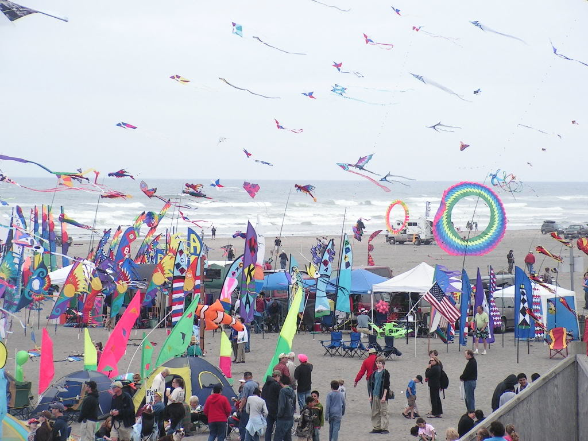
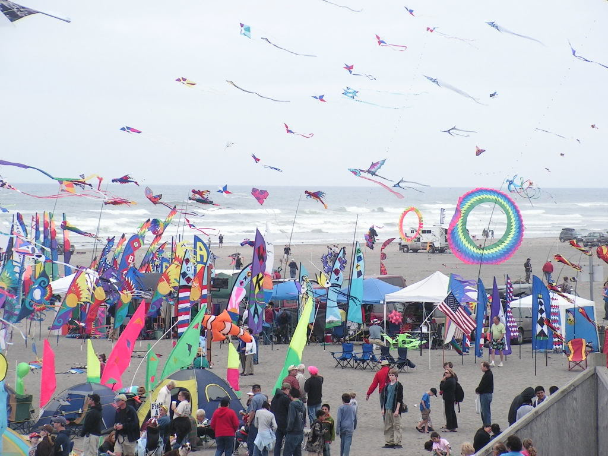
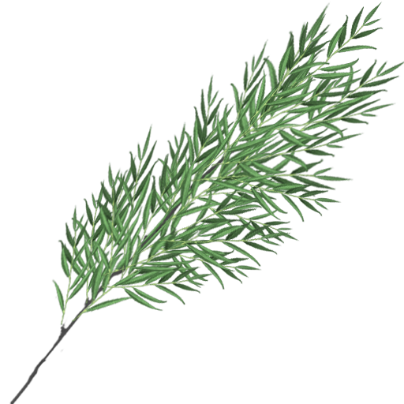

Qingming Festival:
Tomb-Sweeping Day
A traditional Chinese festival of the first day of the fifth solar term
of the Chinese lunisolar calendar. Chinese Memorial Day (Ancestors Day)
The festival last for 3 days, and usually takes place on the 4th or 5th day of April.
The holiday is a perfect example to the celebration of the virtue of
Xiao ,
known as the traditional value that children hold for their parents, and
is meant as a child's holiday to celebrate and remember relatives and ancestors
who have passed away
Summary
The Qingming Festival is a day of sacrifice for the people of China. It is a holiday
to honor dead relatives, friends, and loved ones. On this day, families would often
burn incense and offer food. People are often seen burning paper money.
The burning of paper money is an offering to the dead so that ancestors
may buy anything that they desire in the after life. The day is a holiday of both
happiness and sadness. Along with mourning the dead, people often enjoy the
day in hopes of a prosperous Spring. A celebration of Spring, where the trees and
flowers are blooming. The sun is shining brightly, and everything is being reborn.
Customs
To celebrate the Qingming festival, people will clean the tombs of their ancestors.
They also will have spring outings, and children would fly kites of different shapes
and sizes. Families would put willow branches on the gates of tombs, and participate
in different sports and activities to ward off the cold in anticipation of the arrival of
the spring season.
Visiting tombs and honoring the dead
People commemorate and show their respects by doing many things. The traditional
way to respect one's ancestors is usually through offering food, tea, and wine. People will also burn incense and
joss paper.
Families will sweep ancestor's tombs, remove weeds, and add fresh soil to the
graves, and stick
willow branch

on the tombs.